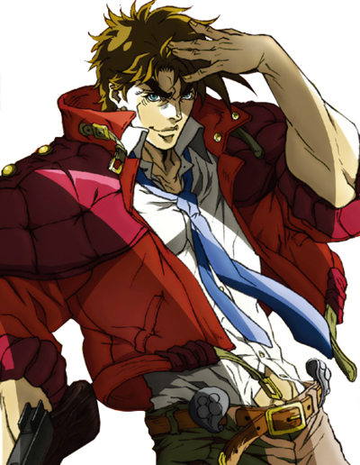
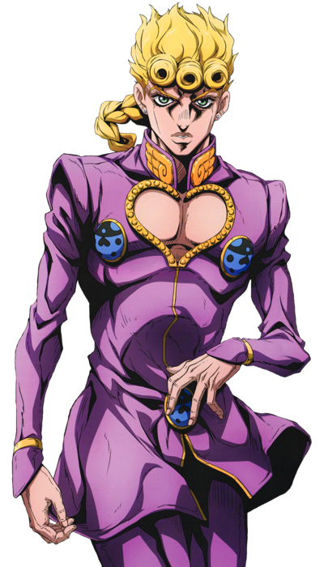
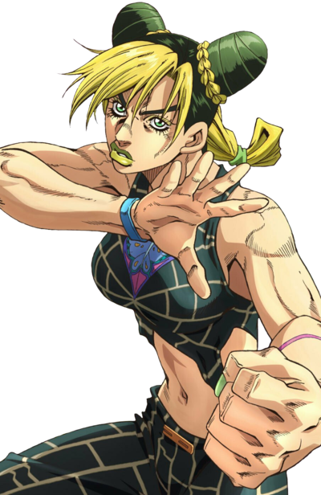
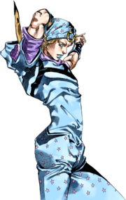

JOJO PARADISE
VOCÊ PRECISA ASSISTIR JOJO’S BIZZARE ADVENTURE
Conheça os Joestars




Saiba Mais
Quer conhecer mais sobre os personagens? acesse a wiki oficial de jojo
Johnathan Joestar
Joseph Joestar
Jotaro Kujo
Josuke Higashikata
Giorno Giovanna
Jolyne Kujo
Johnny Joestar